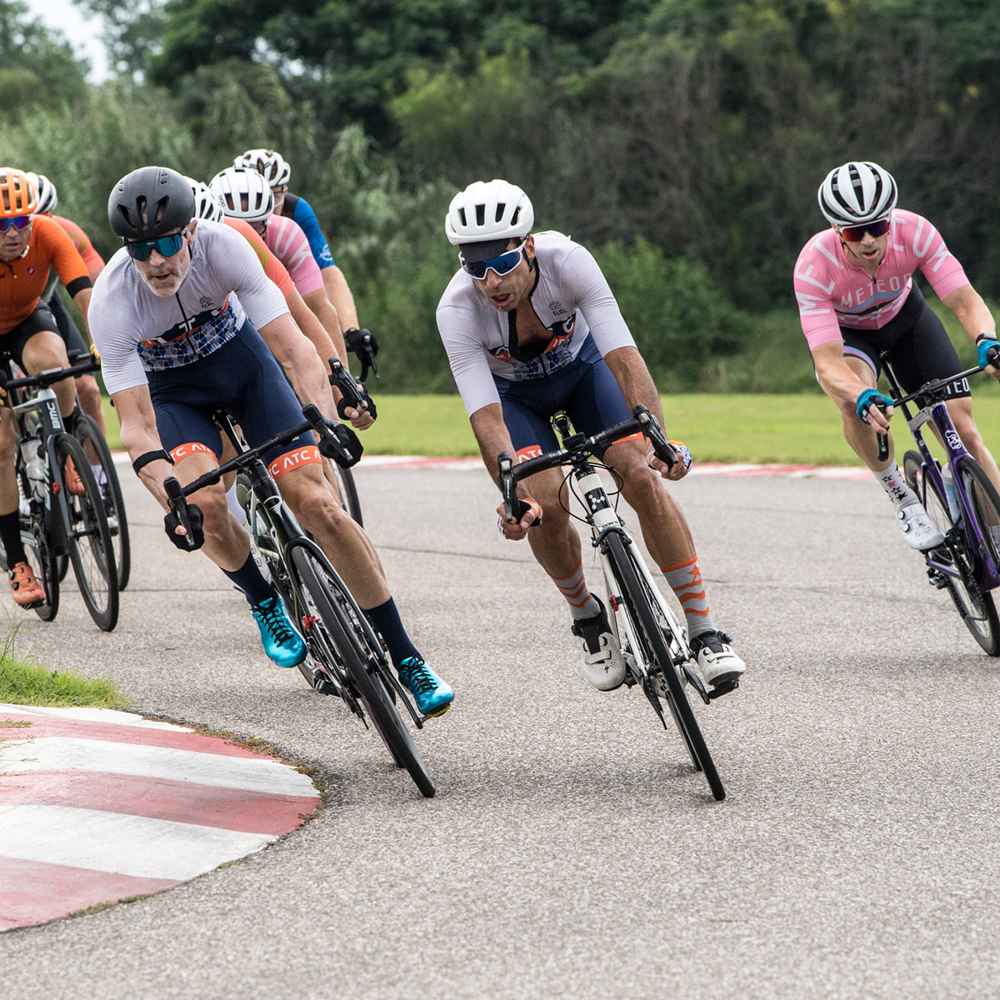
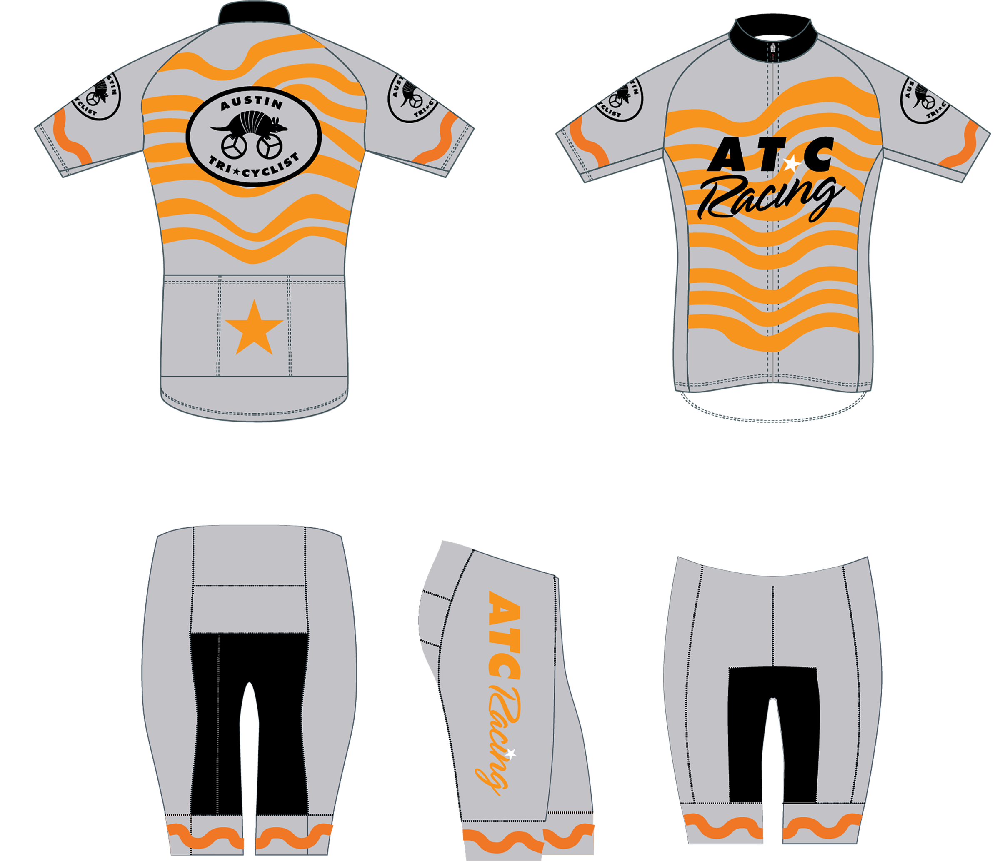
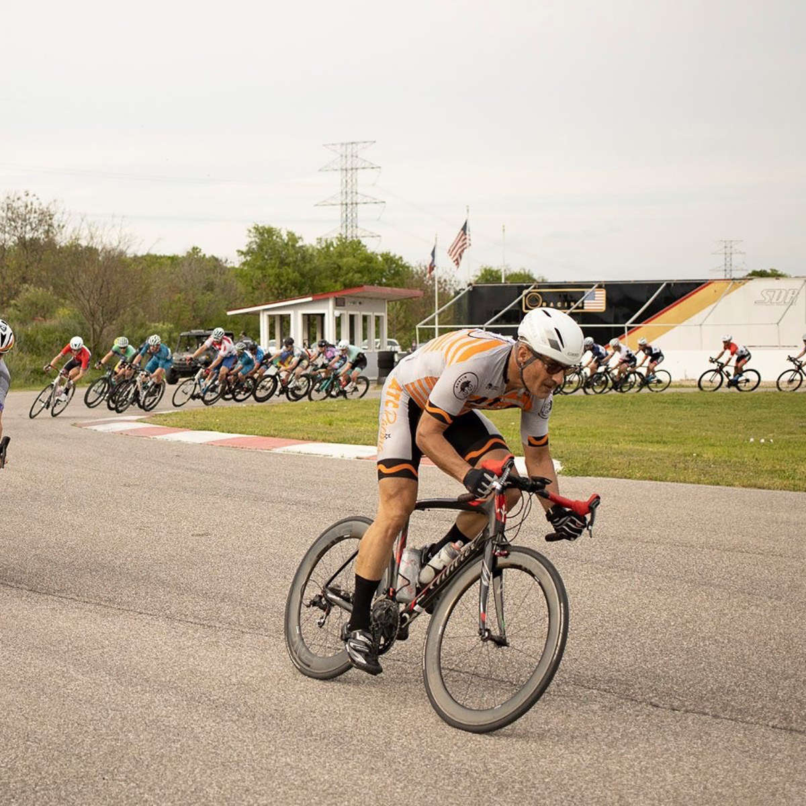
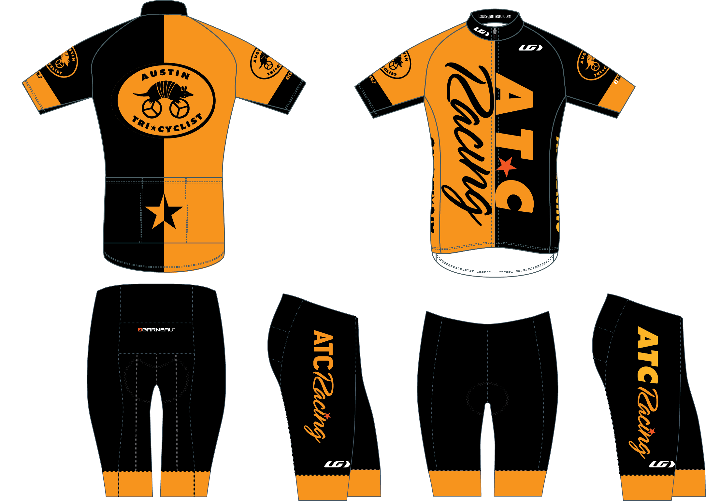
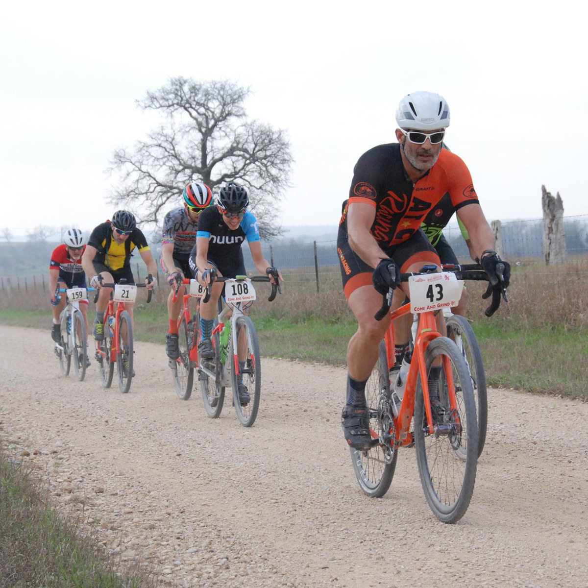
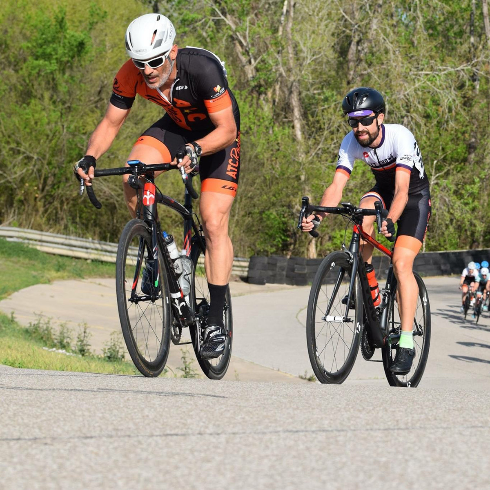
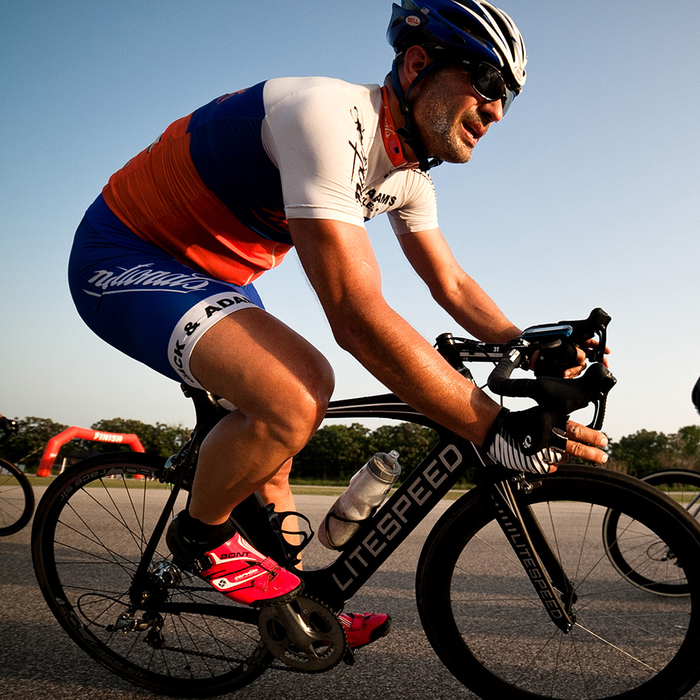
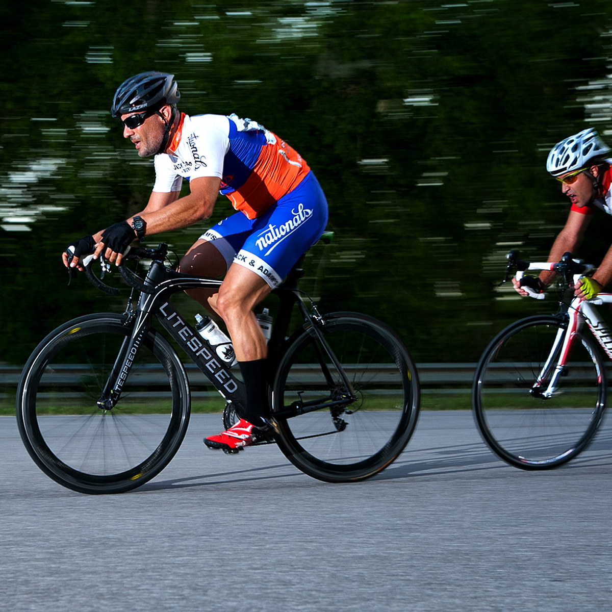

Work / Cycling Kit Designs
Other work · 2013–19
Cycling Kit Designs

Work / Cycling Kit Designs
Other work · 2013–19
Some of my fun past time of Designing kits for my cycling teams over the years.
2019 team kits.
Looking at patterns as a means of differentiating from other teams.
Good when paired together with team mates.
2017 team kits.
We wanted to lighten the kits up and differ from the other teams that were all very hipstery and dark. The heat in Texas can be a bit much and the dark jerseys we had prior was a bit much.
Needs to look fast while sprinting for the line.
2015 team kits.
We had a new bike shop sponsor and their requirement was that their name was prominent on the jersey. Their colors were orange and black from previous years.
Orange and Black goes well on the dusty gravel roads of Texas.
2013 team kits.
Based on the Belgian national champion jersey but with our team colors. I wanted a simple Design that would be easy to see your own teammates in the peloton.







